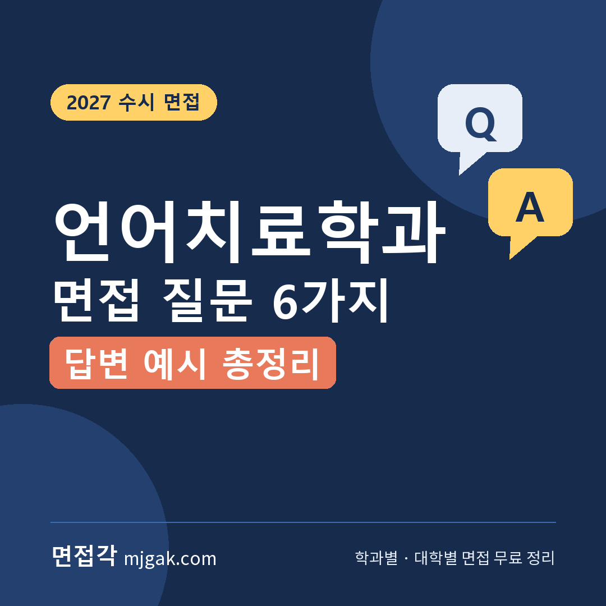
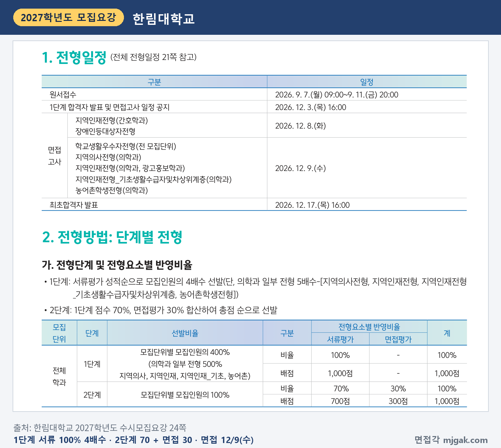
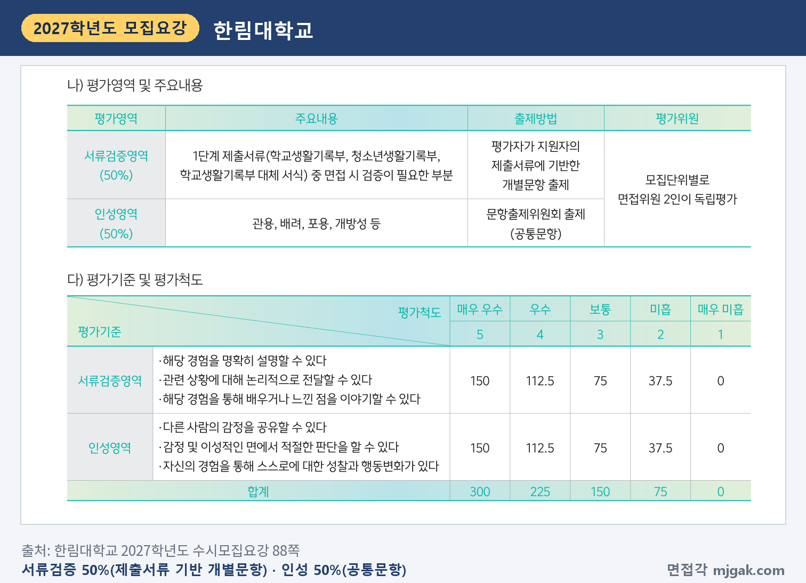
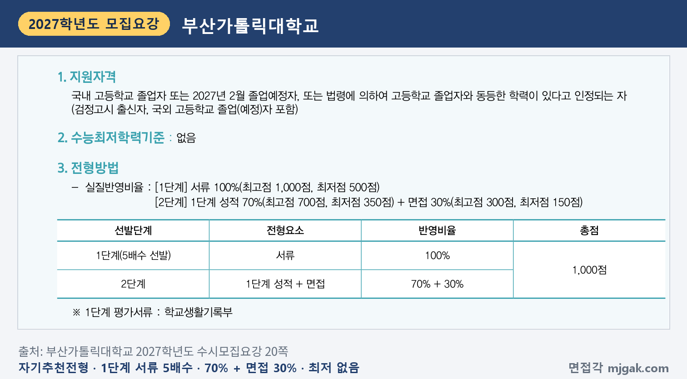
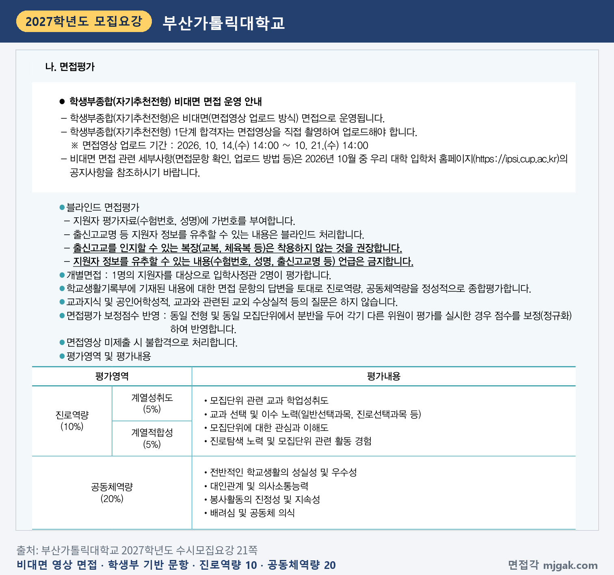
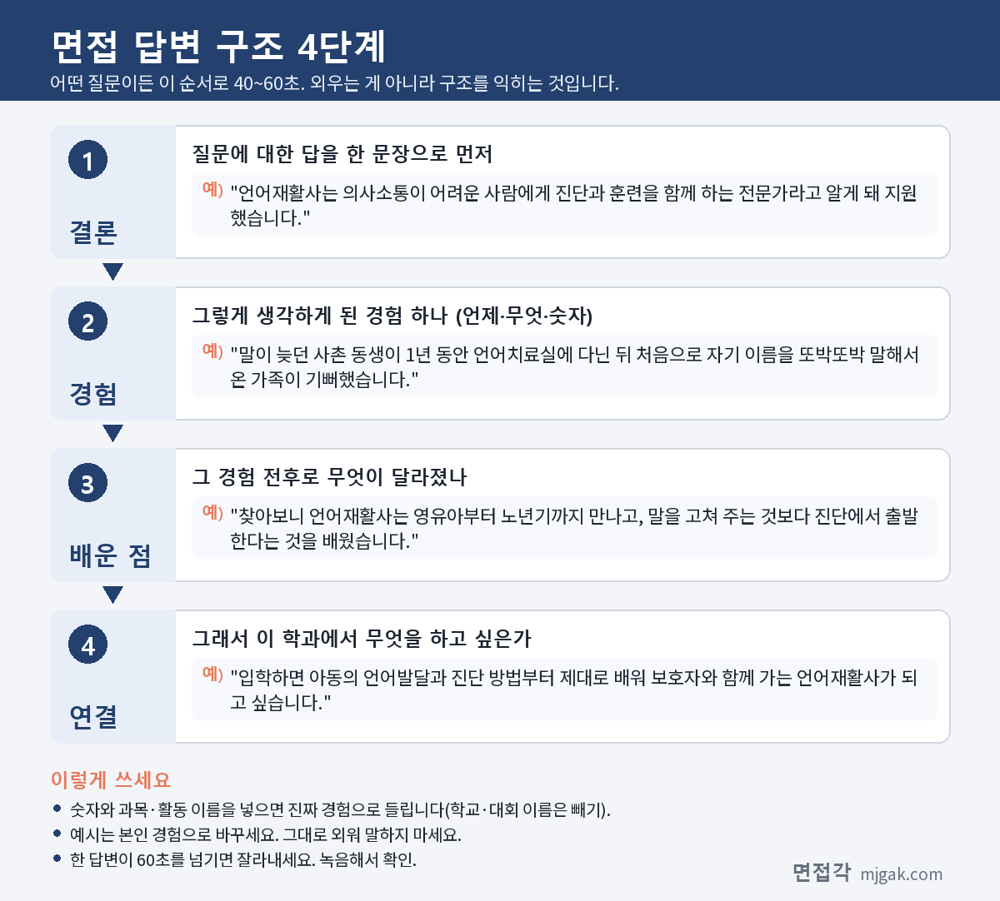

Ctrl+V (서식 유지됨)제목
본문 (이 영역 전체가 복사됩니다)
📷 여기에 이미지 넣기 — 썸네일 — thumb-speech.png (대표 이미지로 지정)
언어치료학과 면접을 준비할 때 먼저 정리할 것은 언어재활사가 어떤 사람인지입니다. 한국보건의료인국가시험원은 언어재활사를 언어습득·언어처리 과정에 어려움이 있어 의사소통이 힘든 사람에게 전문적인 진단과 훈련을 하는 전문가로 소개합니다. "말을 고쳐 주는 사람"보다 이 정의에서 출발해 내 경험을 붙이면 답이 구체적이 됩니다. 이 글은 언어치료학과 면접 질문 6가지와 답변 예시, 2027학년도 모집요강 두 곳(한림대 언어청각학부, 부산가톨릭대 언어청각치료학과)의 면접 방식과 날짜, 언어재활사 자격 과정, 답변 4단계, 2주 준비 순서, 자주 묻는 것들까지 정리했습니다. 수시로 언어치료학과·언어청각학부에 지원한 고3과 재수생이 읽으시면 됩니다.
1. 언어치료학과 면접, 2027학년도에는 어떻게 보나
2027학년도 수시모집요강에서 언어치료 계열 모집단위가 면접을 보는 것을 확인한 두 대학입니다. 둘 다 학생부종합이고 1단계 서류 뒤 면접 30%를 반영합니다. 한림대는 대면 면접, 부산가톨릭대는 면접영상을 올리는 비대면 면접입니다.
한림대학교 학생부종합 학교생활우수자전형 언어청각학부(언어병리학·청각학)는 10명을 뽑습니다(19쪽). 1단계는 서류평가 100%로 모집인원의 4배수, 2단계는 1단계 점수 70%에 면접평가 30%입니다(24쪽). 4배수를 적용하면 1단계 합격 규모는 40명입니다(이 글에서 계산한 값). 의학과를 뺀 전 모집단위는 수능 최저가 없습니다(26쪽). 1단계 합격자 발표는 12월 3일(목) 16시, 학교생활우수자전형 면접은 12월 9일(수), 최초합격자 발표는 12월 17일(목) 16시입니다(24쪽).
📷 여기에 이미지 넣기 — 캡처 1 — 한림대학교 2027학년도 수시모집요강 24쪽: hallym-2027-speech-method.png
면접은 서류검증영역 50%와 인성영역 50%입니다. 서류검증영역은 1단계 제출서류 중 면접에서 검증이 필요한 부분을 평가자가 개별 문항으로 내고, 인성영역은 관용·배려·포용·개방성 등을 문항출제위원회의 공통 문항으로 묻습니다. 모집단위별로 면접위원 2인이 독립평가합니다(88쪽). 학생부종합은 수험생 1명에 면접위원 2명, 15분 내외이고, 블라인드 면접이라 교복을 입을 수 없습니다(93쪽). 보정지수 적용 전 면접총괄점수 75점 미만은 불합격입니다(25쪽). 언어청각학부는 2학년 진급 때 언어병리학전공과 청각학전공 중 하나를 고릅니다(105쪽).
📷 여기에 이미지 넣기 — 캡처 2 — 한림대학교 2027학년도 수시모집요강 88쪽: hallym-2027-speech-interview.png
부산가톨릭대학교 학생부종합 자기추천전형 언어청각치료학과는 3명입니다(5쪽). 1단계 서류 100%로 5배수, 2단계는 1단계 성적 70%에 면접 30%이고 수능 최저는 없습니다(20쪽). 5배수면 1단계 합격 규모는 15명입니다(이 글에서 계산한 값).
📷 여기에 이미지 넣기 — 캡처 3 — 부산가톨릭대학교 2027학년도 수시모집요강 20쪽: cup-2027-speech-method.png
면접은 1단계 합격자가 면접영상을 직접 촬영해 올리는 비대면 방식입니다. 학교생활기록부 내용에 대한 문항의 답변으로 진로역량(계열성취도 5%, 계열적합성 5%)과 공동체역량(20%)을 입학사정관 2명이 평가하고, 교과지식·공인어학성적·교과와 관련된 교외 수상실적 등은 묻지 않습니다. 영상을 내지 않으면 불합격입니다(21쪽). 1단계 발표는 10월 14일(수) 14시, 영상 업로드는 10월 14일(수) 14시~21일(수) 14시, 영상 평가는 10월 25일(일)로 2027학년도 일정은 이미 끝났습니다. 합격자 발표는 11월 25일(수) 14시 예정입니다(6쪽). 2028학년도에 지원할 학생은 형식 참고용으로 보세요.
📷 여기에 이미지 넣기 — 캡처 4 — 부산가톨릭대학교 2027학년도 수시모집요강 21쪽: cup-2027-speech-interview.png
두 대학을 나란히 놓으면 방향이 보입니다. 두 곳 모두 학생부를 바탕으로 묻는 문항이 들어 있어(88·21쪽), 내 학생부 활동을 "한 일 → 배운 점 → 그 뒤 행동"으로 설명하는 준비가 중심입니다. 한림대는 여기에 공통 인성 문항이 더해지고, 면접은 수능 뒤인 12월 9일입니다. 참고로 나사렛대 언어치료학과는 2027학년도 수시를 학생부교과(교과 100%)와 학생부종합 서류형(서류 100%)으로만 뽑고(나사렛대 요강 18·22·24쪽), 대구대 언어치료학과는 학생부교과 면접전형 모집인원이 없습니다(대구대 요강 7·14쪽). 지원 대학의 정확한 방식과 날짜는 반드시 해당 대학 모집요강에서 다시 확인하세요.
2. 언어치료학과 면접 질문 6가지와 답변 예시
예시 답변은 답변 구조를 보여 주기 위한 가상의 예시입니다. 그대로 외우지 말고 본인 경험으로 바꿔 쓰세요. 공통 원칙은 하나입니다. "말을 고쳐 주는 사람이 아니라 의사소통을 진단하고 함께 훈련하는 사람으로, 내가 직접 확인한 사실만 말한다."
▶ 질문 1. 언어재활사가 되고 싶은 이유는 무엇인가요? 언어재활사는 어떤 일을 하나요?
왜 묻나: 지원 동기와 직업 이해를 함께 묻습니다. 부산가톨릭대 진로역량의 "모집단위에 대한 관심과 이해도", 한림대 서류검증영역의 "해당 경험을 명확히 설명할 수 있다"에 해당합니다.
답변 구조: 계기가 된 구체적 경험 → 찾아보고 알게 된 언어재활사의 일(진단과 훈련, 대상의 범위) → 가장 관심 있는 분야 → 입학 후 배우고 싶은 것.
답변 예시:
"초등학생 사촌 동생이 말이 늦어 1년 동안 언어치료실에 다녔고, 처음으로 자기 이름을 또박또박 말한 날 가족 모두가 기뻐했습니다. 그때 언어재활사가 어떤 일을 하는지 궁금해 찾아보니, 의사소통에 어려움이 있는 사람에게 진단과 훈련을 함께 하는 전문가이고 영유아부터 노년기까지 만난다는 것을 알았습니다. 저는 아동의 언어발달에 가장 관심이 있고, 입학하면 언어발달과 진단 방법부터 제대로 배우고 싶습니다."
주의: "말을 고쳐 주는 사람"이라는 한 줄로 끝내기보다, 진단과 훈련을 함께 한다는 점과 내가 확인한 내용을 말하는 편이 구체적입니다.
▶ 질문 2. 말이 늦은 아이의 보호자가 "언제쯤 말을 잘하게 되나요"라고 묻는다면 어떻게 답하겠습니까?
왜 묻나: 보호자와 소통하는 태도를 묻는 상황 질문입니다. 한림대 인성영역 평가기준의 "다른 사람의 감정을 공유할 수 있다", "감정 및 이성적인 면에서 적절한 판단을 할 수 있다"에 해당합니다(88쪽).
답변 구조: 보호자의 걱정을 먼저 듣는다 → 확인할 수 없는 기간은 약속하지 않는다 → 지금 할 수 있는 것과 다음 목표를 설명한다 → 집에서 함께할 작은 활동을 정한다.
답변 예시:
"먼저 보호자께서 어떤 점이 가장 걱정되시는지 끝까지 듣겠습니다. 정확한 기간은 제가 약속할 수 없는 부분이라 솔직하게 말씀드리고, 대신 아이가 지금 할 수 있는 것과 다음에 목표로 하는 것을 구체적으로 설명드리겠습니다. 그리고 집에서 함께 해 볼 수 있는 짧은 활동을 하나 정해 다음 시간에 어땠는지 같이 이야기하겠습니다. 보호자가 혼자 기다리지 않도록 하는 것이 중요하다고 생각합니다."
주의: "금방 좋아질 거예요"처럼 확인할 수 없는 결과를 약속하는 답은 피하세요. 듣기 → 솔직한 설명 → 함께할 일 순서로 말하면 됩니다.
📷 여기에 이미지 넣기 — 이미지 1 — 제미나이 생성: 밝은 언어치료실 창가에서 그림 카드·손거울·손인형 옆에서 답하는 여학생(실사) / "제미나이 프롬프트 1"
(AI로 만든 이미지로, 실제와 다를 수 있습니다)
▶ 질문 3. 의사소통장애에는 어떤 것이 있는지 아는 대로 말해 보세요.
왜 묻나: 학과에 대해 스스로 찾아본 내용을 묻는 질문입니다. 부산가톨릭대 진로역량 평가내용의 "모집단위에 대한 관심과 이해도", "진로탐색 노력"과 이어집니다(21쪽).
답변 구조: 찾아본 자료 → 분류(언어발달장애, 조음·음운장애, 유창성장애, 음성장애, 신경언어장애) → 그중 하나를 골라 더 알아본 것 → 입학 후 배우고 싶은 것.
답변 예시:
"언어재활사 국가시험 직종 안내 자료에서 의사소통장애를 언어발달장애, 조음·음운장애, 유창성장애, 음성장애, 신경언어장애로 나눈다는 것을 봤습니다. 그중 유창성장애가 궁금해 더 찾아봤는데, 말을 더듬는 친구가 발표를 피하던 모습이 떠올랐기 때문입니다. 입학하면 각각의 장애를 어떻게 평가하고 구분하는지부터 배우고 싶습니다."
주의: 모르는 용어를 억지로 설명하지 마세요. 분류 하나를 정확히 말하고 왜 궁금했는지까지 이어 가면 충분합니다.
▶ 질문 4. 학생부에 적힌 활동 중 이 학과와 가장 관련 있는 것은 무엇이고, 무엇을 배웠나요?
왜 묻나: 서류(학생부) 기반 질문입니다. 한림대는 제출서류 중 검증이 필요한 부분을 개별 문항으로 내고 "해당 경험을 통해 배우거나 느낀 점을 이야기할 수 있다"를 평가기준으로 적었습니다(88쪽). 부산가톨릭대도 학교생활기록부 내용에 대한 문항으로 평가합니다(21쪽).
답변 구조: 활동 이름과 시기 → 내가 한 일 → 알게 된 것 → 그 뒤 이어진 행동 → 학과와의 연결.
답변 예시:
"2학년 국어 시간에 '말하기 불안'을 주제로 발표를 준비하면서 말을 더듬는 사람의 경험담을 찾아봤습니다. 발표 뒤 반 친구 한 명이 자기도 발표할 때 말이 막혀 힘들다고 털어놓아, 함께 천천히 연습하며 발표 순서를 바꿔 주었습니다. 이 일로 말의 어려움이 성격 문제가 아니라 도움이 필요한 영역이라는 것을 알게 됐고, 진로 시간에 언어재활사의 일을 조사해 발표하며 진로를 정했습니다."
주의: 학생부에 없는 활동을 꾸미거나 부풀리면 이어지는 질문에 설명하기 어렵습니다. 한림대는 공인어학성적·교외 수상실적, 학교생활기록부 기재금지 항목, 독서활동·개인봉사활동 실적·수상경력처럼 대입에 반영하지 않는 항목, 이름·출신고교·부모의 직업을 언급하면 감점 등 불이익을 받을 수 있고, 수학·과학·외국어 교과 관련 교외 대회 수상실적은 말하면 "0점"(불합격) 처리한다고 적었습니다(91·92쪽). 수업과 학급 활동 위주로 정리하세요.
▶ 질문 5. 다른 사람의 이야기를 끝까지 들어 주어서 상황이 나아진 경험이 있나요?
왜 묻나: 공감과 의사소통 경험을 묻습니다. 부산가톨릭대 공동체역량의 "대인관계 및 의사소통능력", "배려심 및 공동체 의식", 한림대 인성영역의 "자신의 경험을 통해 스스로에 대한 성찰과 행동변화가 있다"에 해당합니다.
답변 구조: 상황 → 내가 한 구체적인 행동 하나 → 결과 → 그 경험으로 바뀐 내 태도.
답변 예시:
"모둠 과제에서 말수가 적은 친구가 회의 때마다 의견을 내지 않아 다른 친구들이 답답해했습니다. 쉬는 시간에 따로 이야기를 들어 보니 이미 자료를 많이 찾아 두었는데 끼어들 타이밍을 몰라 말하지 못했다고 했습니다. 다음 회의 때 제가 그 친구에게 먼저 질문을 넘겼고, 그 자료가 발표의 중심이 됐습니다. 그 뒤로 저는 말이 없는 사람에게도 말할 차례를 먼저 만들어 주려고 합니다."
주의: "경청을 잘합니다" 같은 자기 평가보다 내가 한 행동 하나가 드러나게 말하세요.
▶ 질문 6. 언어재활사가 되려면 어떤 과정을 거치나요? 졸업 후 어디에서 일하고 싶나요?
왜 묻나: 자격 취득 과정과 진로를 알고 지원했는지 묻습니다. 부산가톨릭대 진로역량의 "진로탐색 노력"과 이어집니다.
답변 구조: 자격 과정(관련 교과목 이수와 학위 → 2급 국가시험 → 경력 뒤 1급) → 일할 수 있는 곳 두 갈래 이상 → 장기 목표.
답변 예시:
"장애인복지법에 따라 언어재활 관련 교과목을 이수하고 관련 학과 학위를 받으면 2급 언어재활사 국가시험에 응시할 수 있고, 합격해야 자격증을 받는다고 알고 있습니다. 1급은 2급 자격을 가진 뒤 언어재활 분야 대학원 학위를 받고 언어재활기관에서 1년 이상 일했거나, 관련 학과 학사학위로 3년 이상 일해야 응시할 수 있습니다. 졸업 후에는 병원 언어치료실에서 경험을 쌓고 싶고, 복지관이나 사설기관에서 아이들을 오래 만나는 길도 생각하고 있습니다. 장기적으로는 1급 자격까지 취득하고 싶습니다."
주의: 자격 과정은 법에 적힌 대로 정확히 말하세요. "졸업하면 바로 자격증이 나온다"는 틀린 설명입니다.
3. 답변은 이 4단계로 만드세요
어떤 질문이든 결론 → 경험 → 배운 점 → 연결, 이 순서로 40~60초 안에 말하면 됩니다. 한림대 서류검증영역 평가기준도 "해당 경험을 명확히 설명", "논리적으로 전달", "배우거나 느낀 점"입니다(88쪽). 아래 도식은 질문 1을 4단계로 쪼갠 것입니다.
📷 여기에 이미지 넣기 — 도식 — structure-speech.png
4. 언어치료학과 면접 준비 순서 (2주 계획)
한림대는 1단계 발표(12월 3일)와 면접(12월 9일) 사이가 엿새입니다. 1~8일차는 수능이 끝난 뒤 1단계 발표 전에 해 두세요.
1~2일차: 지원 대학 모집요강에서 면접 방식을 확인합니다. 대면인지 영상인지, 1단계 배수, 면접 비중(30%), 평가 항목, 날짜, 복장 규정. 영상 면접이면 업로드 기간과 방법 공지를 먼저 찾습니다.
3~4일차: 질문 1과 6(지원 동기, 자격 과정과 진로)을 내 경험으로 완성합니다. 40~60초. 언어재활사의 정의와 2급·1급 자격 과정을 정확히 넣습니다.
5~6일차: 질문 3(의사소통장애 분류)을 준비합니다. 다섯 가지 분류를 외우고, 그중 하나를 골라 왜 궁금했는지 말할 수 있게 합니다.
7~8일차: 학생부를 다시 읽고 학과와 관련된 활동마다 "한 일 → 배운 점 → 그 뒤 행동"을 한 줄씩 적습니다. 한림대 서류검증영역처럼 학생부에서 개별 문항이 나오는 대학을 대비합니다.
9~10일차: 질문 2와 5를 비슷한 상황 몇 가지로 바꿔 연습합니다. 보호자가 재촉하는 경우, 아이가 활동을 거부하는 경우, 친구가 말을 꺼리는 경우처럼요.
11~12일차: 시간을 재며 모의 면접을 합니다. 한림대는 15분 내외입니다. 녹음본을 들으며 말이 빨라지는 부분과 이름·학교 이름이 나오는 표현을 고칩니다.
전날: 새 답변을 만들지 않습니다. 수험표·신분증을 챙기고 복장·블라인드 규정을 다시 확인한 뒤 일찍 잡니다.
5. 언어치료학과 면접은 언제 보나
날짜순으로 정리하면 이렇습니다.
- 10월 14일(수) 14시: 부산가톨릭대 자기추천 1단계 발표, 영상 업로드 시작(종료)
- 10월 21일(수) 14시: 부산가톨릭대 영상 업로드 마감(종료)
- 10월 25일(일): 부산가톨릭대 영상 평가(종료)
- 11월 19일(목): 수능
- 11월 25일(수) 14시: 부산가톨릭대 합격자 발표 예정(6쪽)
- 12월 3일(목) 16시: 한림대 1단계 발표 및 면접일정 공지
- 12월 9일(수): 한림대 학교생활우수자전형 면접(수능 후)
- 12월 17일(목) 16시: 한림대 최초합격자 발표(24쪽)
한림대 지원자는 수능 전에는 수능에 집중하고, 학생부 활동 정리만 짧게 해 두세요.
6. 언어치료학과 면접 자주 묻는 것들
Q. 언어치료학과를 졸업하면 바로 언어재활사가 되나요?
A. 아닙니다. 장애인복지법 제72조의2에 따라 언어재활 관련 교과목을 이수하고 관련 학과 학위를 받으면 2급 언어재활사 국가시험 응시 자격이 생기고, 국가시험에 합격해야 보건복지부장관이 자격증을 내줍니다. 국가시험은 한국보건의료인국가시험원이 시행 업무를 맡고 있습니다.
Q. 1급 언어재활사와 2급 언어재활사는 어떻게 다른가요?
A. 1급은 2급 자격증을 가진 사람이 대학원에서 언어재활 분야 석사·박사학위를 받고 언어재활기관에 1년 이상 재직했거나, 대학에서 관련 학과 학사학위를 받고 언어재활기관에 3년 이상 재직한 경우에 응시할 수 있습니다(장애인복지법 제72조의2).
Q. 수능 최저가 있나요?
A. 한림대 학교생활우수자전형(언어청각학부)과 부산가톨릭대 자기추천전형(언어청각치료학과)은 수능 최저가 없습니다(26·20쪽). 대학과 전형마다 다르니 지원 전형별로 확인하세요.
Q. 면접 복장 규정이 있나요?
A. 한림대 모집요강은 블라인드 면접이라 교복 착용을 금지한다고 적었습니다(93쪽). 부산가톨릭대 모집요강은 출신고교를 알 수 있는 복장(교복, 체육복 등)을 입지 않을 것을 권장하고, 수험번호·성명·출신고교명을 말하지 못하게 합니다(21쪽). 그 밖의 복장 규정은 두 요강에 없습니다.
Q. 비대면 영상 면접은 어떻게 보나요?
A. 부산가톨릭대 자기추천전형은 1단계 합격자가 면접영상을 직접 촬영해 정해진 기간에 업로드하고, 평가위원이 이를 비대면으로 평가합니다. 면접 문항 확인과 업로드 방법은 입학처 홈페이지 공지로 안내하며, 영상을 내지 않으면 불합격 처리됩니다(6·21쪽).
7. 면접 전날 체크리스트
□ 지원 동기를 "경험 → 언어재활사의 일(진단과 훈련) → 관심 분야"로 60초 안에 말할 수 있다
□ 의사소통장애 분류 다섯 가지를 말할 수 있다
□ 2급·1급 언어재활사 자격 과정을 법에 적힌 대로 말할 수 있다
□ 보호자 상황 질문에 "듣기 → 솔직한 설명 → 함께할 일" 순서로 답할 수 있다
□ 학생부의 학과 관련 활동마다 한 일·배운 점·그 뒤 행동을 말할 수 있다
□ 공인어학성적·교외 수상·독서활동·이름·학교 이름·부모 직업이 답에 나오지 않는다
□ 면접 날짜·장소, 복장·블라인드 규정을 다시 확인했고 수험표·신분증을 챙겼다
8. 함께 보면 좋은 글
언어치료학과 면접은 전문 지식을 늘어놓기보다, 말이 어려운 사람의 이야기를 끝까지 듣고 할 수 있는 것부터 함께 찾는 사람인지를 내 경험으로 보여 주는 자리입니다.
※ 이 글의 모집요강 내용은 한림대학교, 부산가톨릭대학교 2027학년도 수시모집요강에서 인용했습니다. 괄호 안 쪽수는 각 모집요강에 인쇄된 쪽수입니다. 질문 6가지는 평가 항목을 바탕으로 정리한 예상 질문이며 대학이 공개한 질문이 아닙니다. 면접 방식과 일정은 바뀔 수 있으니 지원 대학 입학처 공지를 꼭 확인하세요.
언어치료학과를 포함한 학과별 면접 질문·답변 예시와 대학별 2027학년도 면접 정보, 대학이 공개한 실제 면접 기출을 무료로 정리한 사이트입니다. 회원가입 없이 바로 볼 수 있고, 질문을 무작위로 뽑아 60초 타이머로 연습하는 모의 면접도 있습니다.
태그 (#은 에디터가 자동으로 붙이므로 그대로 붙여 넣어도 됩니다)
넣을 이미지 목록 (docs/promo/img 폴더)






제미나이 프롬프트 1 — 밝은 언어치료실 창가에서 그림 카드·손거울·손인형 옆에서 답하는 여학생(실사) (4:3) — 제미나이에 그대로 붙여 넣어 이미지를 만드세요